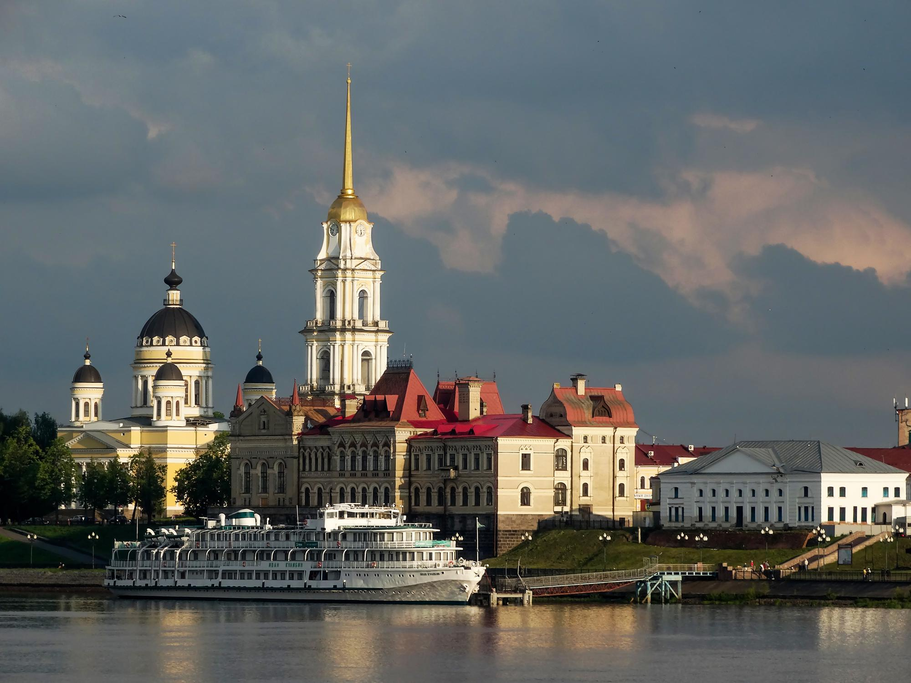

Рыбинск
Рыбинск — город в Ярославской области с населением чуть более 200 тысяч человек, расположенный на слиянии рек Волги, Черемухи и Шексны. Город разместился в самой северной точке реки Волги. Рыбинск состоит из нескольких микрорайонов, которые часто называют поселками. Для туристов интерес представляют пешие экскурсии по историческому центру города с постройками XVIII – начала XX века.

Главная достопримечательность города — в первую очередь его улицы со старинными домами, городская площадь. После масштабной реставрации в честь 950 летия города значительно преобразились главные улицы, площадь и набережная. С каждым годом увеличивается количество туристов, приезжающих в город, чтобы пешком осмотреть лучшие виды города, сделать памятные фотографии. Интересная особенность площади и города в целом — большинство вывесок сделаны в старом стиле.
Рыбинская городская набережная привлекает своим уютом, природной красотой и очарованием. Оказавшись здесь, словно бы переносишься на полтора столетия назад, в прошлое. Кажется, здесь за 150 лет ничего не изменилось. Также размеренно течет Волга-матушка, также возвышается глава Спасо-Преображенского собора.
Никольская часовня — своего рода прижизненный памятник Александру II. Поводом для её строительства стало спасение царя во время неудачного покушения в Летнем саду Петербурга. В память об этом чуде часовню освятили в честь святого Николая Чудотворца. Церковь чествует его 4 апреля, и в этот же день совершена попытка убийства императора.